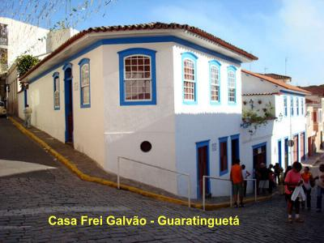
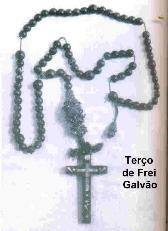
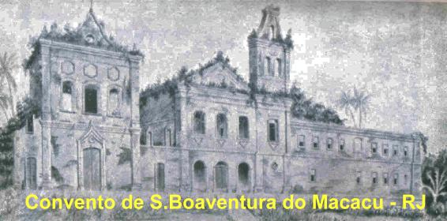
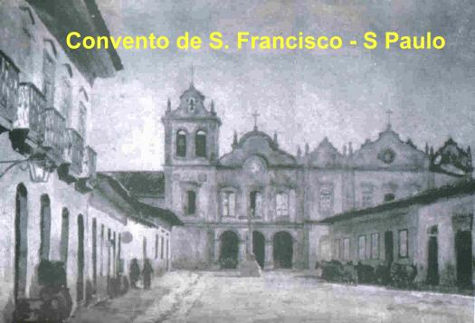
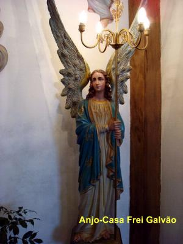
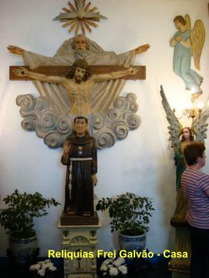

UM HOMEM SANTO
NASCIMENTO E FAMÍLIA
Nasceu em Guaratinguetá,
Estado de São Paulo, e seu pai era Antonio Galvão de França, natural 
Seus pais se casaram em Pindamonhangaba no dia 8 de Fevereiro de 1733, cidade em que nasceram os seus irmãos: José, Maria e Isabel, e depois mudaram para Guaratinguetá, onde nasceu Antonio em 1739, e a seguir nasceu Ana (que faleceu com pouca idade), e depois Ana Joaquina, João, Ana Jacinta, Francisca Xavier e Manoel o filho caçula. Dez filhos, então uma família verdadeiramente grande.
Os pais eram religiosos praticantes e, sobretudo, cultivavam uma profunda caridade ajudando os pobres e mais necessitados. Também tratavam os 28 escravos que trabalhavam na Fazenda, com decência, amor e muito respeito.
Num local da sala tinha um Oratório com imagens de diversos Santos, sobressaindo a de Sant’ Anna, mãe de NOSSA SENHORA, que era a padroeira da família. Tinha também um magnífico crucifixo de ouro muito bonito, uma imagem de NOSSA SENHORA DA CONCEIÇÃO, de Santo Antonio e de outros Santos.
Num ambiente sadio e impregnado de autêntico espírito cristão, viveu e cresceu o menino Antonio.
A FORMAÇÃO DO FILHO
Chegando a idade da adolescência, os seus pais se preocuparam em lhe dar uma formação eficiente e profunda. Naquela época só existia uma entidade hábil para lhe oferecer uma formação ideal, era o Seminário dos Jesuítas, distante 130 quilômetros de Salvador, capital do Estado da Bahia, numa cidadezinha denominada Belém! Antonio, com treze (13) anos de idade, foi para lá, para o mesmo Seminário onde já se encontrava José, o seu irmão mais velho.
Aquele Seminário tinha a fama de “durão”, e era mesmo, só para homens de fibra, porque a disciplina dos Jesuítas se destinava a formar gigantes. Foi fundado pelo Padre Alexandre de Gusmão SJ, que estabeleceu, desde o início, tanto para os frades como os alunos, obedecerem pontualmente ao toque de uma campainha. Não existia qualquer tipo de distinção: nobres, plebeus, servos ou escravos, o ESPÍRITO DE CRISTO igualava todos. Com modéstia se serviam a si mesmo e aos outros. Após as aulas, eram instruídos às práticas cristãs: caridade, pureza, temor a DEUS, bons costumes e devoção a NOSSA SENHORA. Aos domingos ouviam a leitura do Evangelho e o comentário, e também, estudavam os textos bíblicos. Comungavam nas festas de CRISTO e de NOSSA SENHORA, e não poucos recebiam a Sagrada Comunhão cada oito (8) dias, fato raro naquela época. O Colégio Jesuíta ajudou preponderantemente na formação de Frei Galvão, que se aplicou em todos os setores, com dedicada atenção, durante quatro longos anos de estudos.
Assim, em 1756 com 17 anos de idade, retornou a casa paterna. Sua mãe, senhora Isabel tinha morrido há três anos, depois de um longo sofrimento. Este fato, muito entristeceu o coração de Antonio, principalmente considerando, que pela grande distância e dificuldade de comunicação, ele só recebeu a notícia no Seminário um ano depois do acontecimento. Então, chegando à casa de seus pais, sentiu aquele imenso vazio deixado por sua mãe.
NO LAR

Feitos os contatos, ele foi acolhido com simpatia pelos superiores religiosos e, sobretudo, com curiosidade, pelo seu avançado estudo, no período que passou na Bahia. Foi enviado ao Noviciado na Província Franciscana, no Convento de São Boa-ventura do Macacu, não distante do Rio de Janeiro.
Antonio chegou ao Convento em 1760. No dia 15 de Abril, foi o postulante revestido do hábito franciscano pelo Padre Guardião Frei José das Neves, e quando também, segundo o costume, foi acrescentado Sant’ Anna ao seu nome (Sant’ Anna era protetora de sua família). Então o nome do noviço ficou assim: Antonio de Sant’ Anna Galvão.
Segundo os seus biógrafos, Frei Galvão tinha o espírito forte e empreendedor, revestido de um caráter rígido e austero, atencioso e educado.

NOVICIADO
Tudo indica que ele não estranhou o Noviciado, o qual é dedicado a conduzir os aspirantes a se tornarem verdadeiros Frades. Isto porque, aqueles quatro anos passados junto aos Jesuítas se tornaram um aprendizado notável e valioso, que eficientemente preparou o seu caminho para o sacerdócio. Por outro lado, durante o Noviciado é o período em que é feito o aprimoramento da oração. Então, na verdade, se houve tempo em que na oração se adiantou e cresceu a passos de gigante, certamente terá sido neste um ano de Noviciado em que, livre de qualquer trabalho exterior ou alheio a qualquer preocupação, pode engolfar-se totalmente na união Divina. Agora, amoldando-se a Regra Franciscana, na vida religiosa, no dia 16 de Abril de 1761 fez a sua Profissão de Fé diante do Superior Frei José da Madre de Deus Rodrigues, prometendo nos Votos Sagrados, viver em obediência, em pobreza, em castidade e guardar a Regra dos Frades Menores, aprovada pelo Papa Inocêncio III e confirmada por Sua Santidade o Papa Honório III. Naquela época, aos Votos Sagrados era acrescentado: “Prometo e juro por estes Santos Evangelhos, de defender, até dar a própria vida, confessando que a VIRGEM MARIA NOSSA SENHORA, foi concebida sem pecado original e dele preservada, pelos merecimentos de NOSSO SENHOR JESUS CRISTO, seu Santíssimo FILHO”. Este trecho do juramento sobre a verdade da IMACULADA CONCEIÇÃO era juntado, porque naquela época ainda não havia o respectivo dogma de fé, o que veio acontecer em 1854.
SACERDÓCIO
Justamente em virtude de sua excelente preparação no Seminário Jesuíta, sua caminhada para a ordenação sacerdotal, que normalmente era realizada em três anos, foi reduzida para apenas um ano e três meses! Foi ordenado sacerdote no Rio de Janeiro, pelo Bispo Beneditino Dom Frei Antonio do Desterro, em 11 de Julho de 1762, com apenas 23 anos de idade.
Após a ordenação saiu do Rio de Janeiro a pé, acompanhado de outros Frades, colegas de estudos, transferindo-se para o Convento de São Francisco, em São Paulo, para terminar o curso. Como é natural, na viagem teria que passar pela sua cidade natal, então, tudo indica que visitou a casa dos pais em Guaratinguetá e celebrou na Matriz de Santo Antonio, a sua primeira Santa Missa. Em seguida seguiu a caminhada para São Paulo, e se inscreveu no Curso de Filosofia, que começou no dia 24 de Julho de 1762, concluindo os estudos no dia 23 de Julho de 1768. Alem de Filosofia, Frei Galvão estudou Teologia especulativa e moral, exigidas por determinação dos superiores.
No dia 9 de Novembro de 1766, escreveu uma bonita e longa consagração a VIRGEM SANTÍSSIMA, denominando-a de “CÉDULA IRREVOGÁVEL DE FILIAL ENTREGA A NOSSA SENHORA”, onde ele faz a doação integral de si mesmo a MÃE DE DEUS e Nossa Mãe. A beleza do texto revela a grandeza de sua alma e a dimensão de seu amor por DEUS e por NOSSA SENHORA.
Pelo seu aproveitamento demonstrado e sua atuação pessoal, foi designado a servir no próprio Convento de São Francisco, onde fez o curso, recebendo três funções: Porteiro, Pregador e Confessor. Estes três ofícios dados ao jovem sacerdote de 29 a 30 anos de idade, provam com evidência que suas virtudes e competência eram admiráveis. E revela também que ele tinha conquistado a confiança de seus superiores e confrades, pois o cargo de Porteiro era muito importante para o Convento: quanta oração solicitada, quanta confidência, quantas graças alcançadas, quantos sofredores socorridos, quantas crianças abençoadas, quanto pobre recebido com dignidade! Da sua pequena e pobre portaria, Frei Galvão conquistou a orgulhosa São Paulo de seu tempo. E quanta amizade granjeou que por certo, anos mais tarde lhe ajudaram na construção e manutenção da Casa do Recolhimento da Luz.
Como Pregador, logo desabrochou o seu carisma da palavra, fazendo as homilias nas Santas Missas aos Domingos e dias Festivos. Deviam ser Sermões bem preparados e com bastante conteúdo, porque em pouco tempo já era motivo de elogio e louvores por parte dos fieis, inclusive, sendo convidado a participar da Academia de Letras de São Paulo. Frei Galvão só participou da sessão inaugural, no dia 25 de Agosto de 1770, oportunidade em que fez uma preciosa homenagem a Sant’ Anna, Mãe de NOSSA SENHORA, escrevendo um lindo poema em latim.
Considerando estes fatos é fácil avaliar o notável porte intelectual daquele humilde Porteiro. Também sobressaia com muita evidência a formação humanista e eclesial dos Jesuítas unida em perfeita harmonia com a atitude humilde do Frade Menor Franciscano.
Embora com tantas notícias boas, nesta mesma época, a tristeza da saudade envolveu o seu carinhoso coração, com a morte de seu pai no dia 10 de Julho de 1770.
Como Confessor, o neo-sacerdote não teve muito trabalho, porque naquela época o povo não tinha o hábito de procurar com frequência o Sacramento da Reconciliação (Confissão Sacramental). Todavia, foi justamente como Confessor que Frei Galvão teve a oportunidade de conhecer e de se aproximar da Irmã Helena, e com ela, dar início a corajosa obra da Casa do Recolhimento da Luz.
A sua juventude e preciosa disposição, as suas qualidades pessoais, o valioso preparo teológico e seu excelente caráter, atraíram as autoridades religiosas que o nomearam Confessor das Carmelitas do Recolhimento de Santa Teresa, na época, a única Comunidade Feminina de São Paulo. Era afinal, a Providência Divina tecendo as suas tramas através da história complicada dos homens. E foi assim que Frei Galvão conheceu a Irmã Maria Helena do Sacramento.

OBEDIENTE A VONTADE DIVINA
Na década de 1760 a Irmã Maria Helena vivia em São Paulo, e era uma piedosa religiosa, ornada com especiais carismas concedidos pelo SENHOR. Ela recorria sempre ao seu Confessor que era Frei Antonio de Sant’ Anna Galvão, narrando que JESUS lhe aparecia e deixava mensagens, querendo a fundação de uma Casa Religiosa em São Paulo. Como lembrança das confissões da Irmã Helena, o Mosteiro da Imaculada Conceição da Luz guarda um documento que descreve uma destas visões da Irmã. JESUS lhe apareceu como o Bom Pastor, rodeado de muitas ovelhas, umas nos ombros, outras nos braços, outras procurando subir em seu corpo e ELE disse: “Eis aqui estas minhas ovelhas que procuram um aprisco para se recolherem e não o encontram, pois vós podendo, não quereis subministrar-lhes um, fundando um Convento em cumprimento a MINHA Vontade”?
Embora Frei Galvão depois de muitos diálogos com a Irmã e orações diante do Santíssimo, estivesse convencido da autenticidade dos dizeres dela, muitos outros sacerdotes e peritos eclesiásticos, direta ou indiretamente consultados, porque envolvidos nas questões religiosas local, não acreditavam e a submeteram a duros e humilhantes interrogatórios, forçando-a desistir de seu projeto.
Frei Galvão, via tudo aquilo e sofria em silêncio, mas sem desanimar rezava e suplicava o auxílio Divino. Então, com o objetivo de ajudar foi a sede do governo do bispado para se encontrar com o Cônego Antonio de Toledo Lara, que substituía o senhor Bispo em licença, e também visitou o Governador da Capitania de São Paulo, Capitão General Dom Luis Antonio de Sousa Botelho e Mourão. Em ambos, encontrou a maior boa disposição em apoiar a obra. E assim, resolvidas todas as dificuldades, temporais e espirituais, por ordem dele, a Irmã Helena escreveu duas cartas, uma carta ao Cônego Antonio e outra ao Governador de São Paulo, solicitando autorização e o necessário auxílio para a obra.
O Governador tinha chegado de Portugal no dia 10 de Dezembro de 1764 escolhido pela Coroa Portuguesa para administrar o Estado. Embora naquela época, a relação entre a Igreja e o Estado se apresentasse delicada, ele não escondia a sua condição de católico convicto. Por isso mesmo, com simpatia ele acolheu a carta solicitação escrita pela Irmã em 14 de Novembro de 1773, e respondeu no dia 25 de Dezembro de 1773, prometendo apoio integral a fundação da Casa de Recolhimento da Luz.
Por outro lado, Dom Luis se revelou um Governador responsável e zeloso, procurando administrar dignamente a Capitania e sempre buscando melhorias para o povo. Em Setembro de 1773 inaugurou o serviço postal terrestre entre São Paulo e o Rio de Janeiro. A falta da imprensa oficial, para publicar os seus decretos e decisões, o Governo idealizou e colocou em prática este serviço usando o que chamavam: o “bando”. Era um grupo de oficiais de justiça e de pregoeiros do Governo, que a cavalo ou a pé, percorriam a cidade tendo à frente o leitor, em trajes berrantes (para chamar a atenção), chapéu alto e botas reluzentes. Chegados às esquinas e pontos principais da cidade, soavam as trombetas, rufavam os tambores para atrair as pessoas. Quando tinha um bom número, o leitor anunciava em voz alta o edital com as noticias administrativas e os decretos do Governo. Embora raramente, as cartas das pessoas particulares entre São Paulo e o Rio, e vice-versa, eram enviadas para o Governo que fazia o transporte das mesmas. A chegada delas era anunciada pelos leitores nas ruas da cidade, os interessados deveriam procurar a sua carta no Governo das duas cidades, isto, somente seis vezes ao ano.
Existia em São Paulo, no Campo do Guaré, uma Capelinha abandonada e em ruínas, tendo provavelmente um século de vida. O devoto Governador demonstrando concretamente a sua vontade em auxiliar Frei Galvão e a Irmã Helena, no projeto da Casa de Recolhimento, restaurou cuidadosamente a Capelinha, com seus próprios recursos, construindo pequenos cômodos a ela contíguos, para receber a Irmã Helena e suas companheiras, e fez tudo isto em honra e homenagem a sua querida NOSSA SENHORA DOS PRAZERES. Desse modo, concretizava a fundação do Recolhimento com a nova Comunidade Religiosa justamente no dia 2 de Fevereiro de 1774, inclusive com a inauguração da Capelinha de NOSSA SENHORA DA LUZ totalmente reformada, exatamente no dia da Festa de NOSSA SENHORA DA LUZ.
Todavia aquele início de vida no pequeno e improvisado Mosteiro, foi muito difícil para as Irmãzinhas, que viviam numa grande pobreza. E isto permaneceu assim, até conseguirem um auxílio efetivo das autoridades e principalmente, dos amigos devotos e dos benfeitores. Houve dias negros, quando padeceram fome, sede e mesmo faltava até roupas simples para o uso cotidiano, porque as suas que eram velhas, estavam rasgando e desintegrando de tanto serem lavadas. Muitas vezes não tendo água para beber, aliviavam a sede mastigando uma coisa azeda, que a experiência popular ensinou. Não tinham camas para dormir, estendiam esteiras no chão, e tinha um cobertor tipo “peleja” para cobrir, e um cepo de madeira como travesseiro. Algumas das Irmãs que eram mais doentes, tinham um travesseiro feito com barba de pau. Os corredores não tinham iluminação e eram muito estreitos, nele com dificuldade uma pessoa conseguia cruzar com outra. Mas NOSSO SENHOR nunca faltou com Sua misericórdia. Existiam as provações, mas ninguém morreu ou ficou doente por causa da pobreza. Na verdade, com todas as necessidades nunca ninguém morreu de fome e nem de qualquer outra falta. Havia ocasiões que até existia fartura, que caridosamente as Irmãs distribuía para os mais necessitados. As Irmãzinhas viviam somente com as esmolas dos fieis, completamente entregues a Providência Divina. E apesar de tudo isto elas viviam com alegria e plena disposição para trabalhar na obra do SENHOR. Quanta consolação para o coração paterno do Frei Galvão nesta encantadora simplicidade, vendo aqueles jovens corações tão generosos para responderem ao amor do seu DEUS, que as chamavam a trilhar os caminhos da evangélica perfeição!
O homem sábio edificou sua casa sobre a rocha. Caiu a chuva e vieram as torrentes e não a destruíram. O Recolhimento da Luz sendo Obra de DEUS foi edificado sobre a rocha mais dura e mais firme que existe: o sofrimento. A maior de todas as Obras humanas foi operada com o cruel sacrifício da Paixão e Morte de CRISTO. A Igreja, durante séculos, foi regada com o sangue dos mártires, e com ele fortificou os seus alicerces. Ainda hoje, e para sempre, nada de valor é edificado que não brote de muito sacrifício e fiel perseverança.
Com este pensamento, Frei Galvão continuava firme, dirigindo a pequena comunidade religiosa e já começava a cuidar da construção de novo edifício. Ele dava as Irmãs sua orientação espiritual, o ensinamento religioso e bíblico, e zelava principalmente pelas suas necessidades temporais, enquanto a direção interna do Recolhimento ficava nas boas mãos da Madre Helena.

